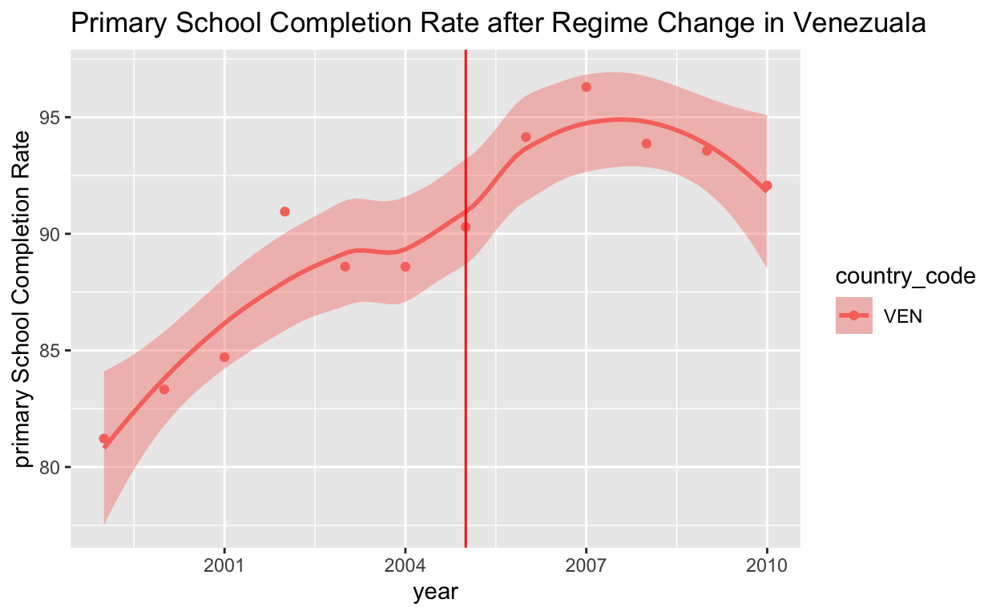
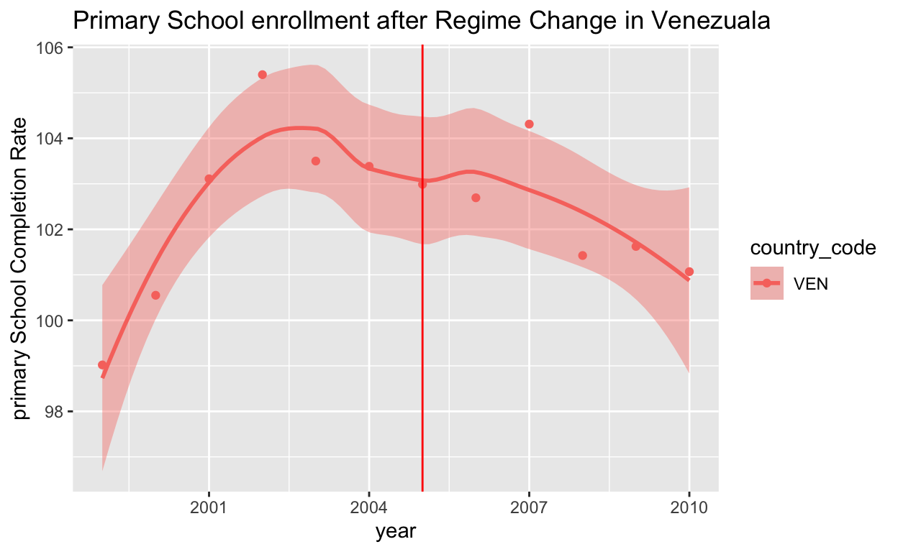
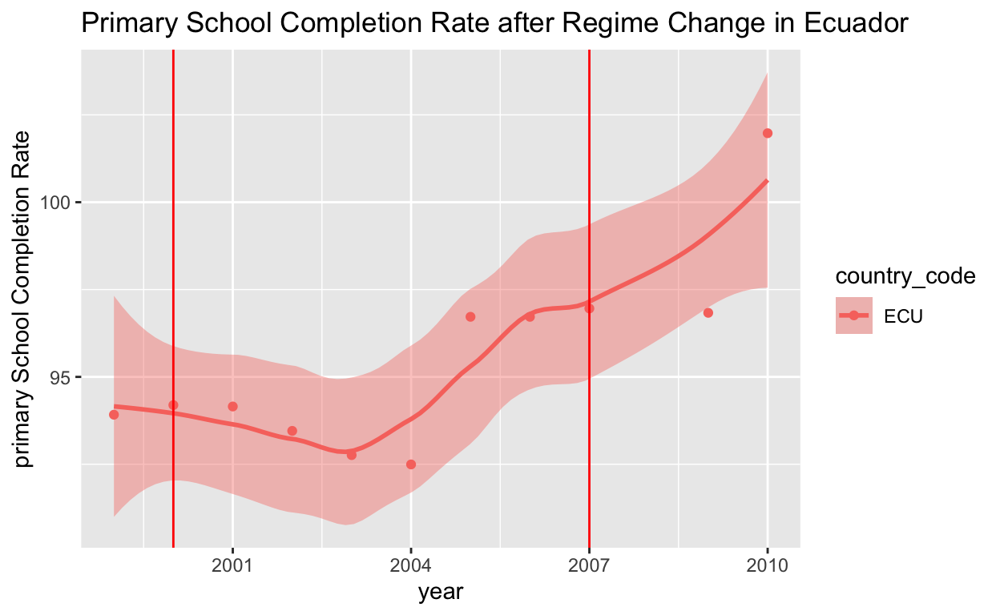
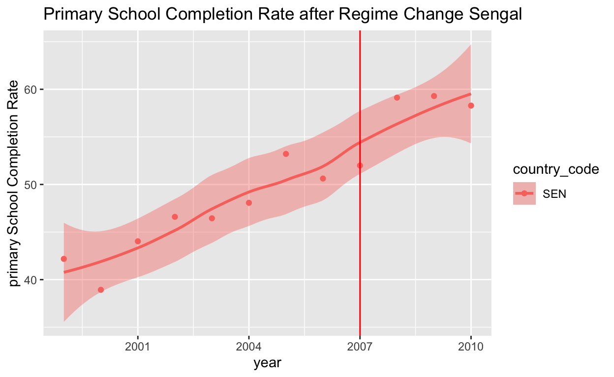
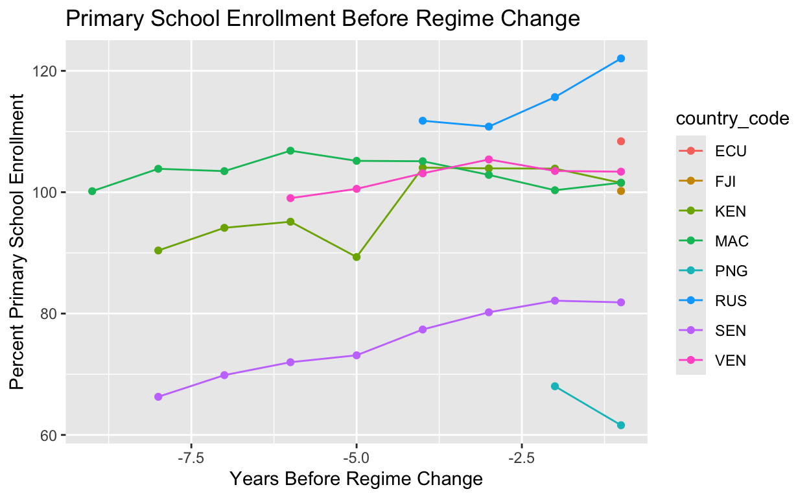
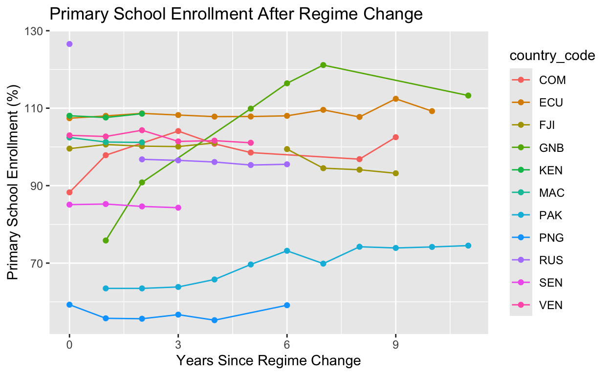

My final project
Here are a couple topics I am interested in exploring: data related to the effectiveness of nuclear weapons being used as leverage in conflicts: can nuclear weapons compel states to change their policies. “Replication Data for: Crisis Bargaining and Nuclear Blackmail”
Environmental justice the intersection between poverty and climate change based harms
Authoritarian governments and climate policy Government Types and policy
demographic benefits from the homestead act who received the land who gained the title etc..
Is regime change from democracy to authoritarian government accompanied by a decrease in education investment? By looking at countries who have transitioned from democratic to authoritarian governments I want to analyze how this transition may correlate with decreasing investment in education by the government. By looking at data on education and regime change from three countries: Nicaragua, Venezuela,and Hungary I want to analyze how lowered investment in education is a key indicator of regime change and democratic backsliding. Nicaragua, Venezuala and Hungary are all unique because they have all recently changed from deomcratic to authoritarian regimes. Freedom to get an education is an important indicator of how democratic a country is but in my research I want to specifically analyze how states lack of investment in education contributes to democratic backsliding and regime change. The first data set I’m using contains information about every country and investment in education and the second data set I’m using contains information about regime changes democratic back sliding and democracy. Investment in education is measured as a percentage of each country’s GDP. The second data set measures democracy on a dichotomous scale. Countries who cross a certain threshold are measured as autocracies and this threshold is determined by a country holding open elections. I will track countries’ investment in education in years leading up to a regime change and after a regime change to see how government investment in education correlates with regime change. For my hypothesis to be supported by the data, education spending should decrease significantly in years leading up to regime change and continue decreasing after the regime change occurs. My hypothesis would be disproved if a country’s funding for education increased before a regime change occurred and continued to increase afterwards.
library(readr)
library(tidyverse)
education <- read_csv("~/Data/world-education-data 2.csv")
glimpse(education)Rows: 5,892
Columns: 11
$ country <chr> "Afghanistan", "Afghanistan", "Af…
$ country_code <chr> "AFG", "AFG", "AFG", "AFG", "AFG"…
$ year <dbl> 1999, 2000, 2001, 2002, 2003, 200…
$ gov_exp_pct_gdp <dbl> NA, NA, NA, NA, NA, NA, NA, 4.684…
$ lit_rate_adult_pct <dbl> NA, NA, NA, NA, NA, NA, NA, NA, N…
$ pri_comp_rate_pct <dbl> NA, NA, NA, NA, NA, NA, NA, NA, N…
$ pupil_teacher_primary <dbl> 33.18571, NA, NA, NA, NA, NA, NA,…
$ pupil_teacher_secondary <dbl> NA, NA, NA, NA, NA, NA, NA, NA, 3…
$ school_enrol_primary_pct <dbl> 27.29885, 22.16299, 22.90859, 75.…
$ school_enrol_secondary_pct <dbl> NA, NA, 14.47151, NA, 14.07805, 1…
$ school_enrol_tertiary_pct <dbl> NA, NA, NA, NA, 1.38107, 1.38966,…Rows: 9,730
Columns: 57
$ pitfcode <chr> "AFG", "AFG", "AFG", "AFG", "AFG", "AFG", "AFG", "A…
$ cowcode <dbl> 700, 700, 700, 700, 700, 700, 700, 700, 700, 700, 7…
$ year <dbl> 1955, 1956, 1957, 1958, 1959, 1960, 1961, 1962, 196…
$ rgjtype <chr> "A", "A", "A", "A", "A", "A", "A", "A", "A", "A", "…
$ rgjdem <dbl> 0, 0, 0, 0, 0, 0, 0, 0, 0, 0, 0, 0, 0, 0, 0, 0, 0, …
$ rgjtrans <dbl> 0, 0, 0, 0, 0, 0, 0, 0, 0, 0, 0, 0, 0, 0, 0, 0, 0, …
$ rgjdurd <dbl> NA, NA, NA, NA, NA, NA, NA, NA, NA, NA, NA, NA, NA,…
$ rgjtaut <dbl> NA, NA, NA, NA, NA, NA, NA, NA, NA, NA, NA, NA, NA,…
$ rgjatype <dbl> NA, NA, NA, NA, NA, NA, NA, NA, NA, NA, NA, NA, NA,…
$ rgjaltl <dbl> NA, NA, NA, NA, NA, NA, NA, NA, NA, NA, NA, NA, NA,…
$ rgjaltlt <dbl> NA, NA, NA, NA, NA, NA, NA, NA, NA, NA, NA, NA, NA,…
$ rgjaltp <dbl> NA, NA, NA, NA, NA, NA, NA, NA, NA, NA, NA, NA, NA,…
$ rgjaltpt <dbl> NA, NA, NA, NA, NA, NA, NA, NA, NA, NA, NA, NA, NA,…
$ rgjdura <dbl> 208, 209, 210, 211, 212, 213, 214, 215, 216, 217, 2…
$ rgjtdem <dbl> 0, 0, 0, 0, 0, 0, 0, 0, 0, 0, 0, 0, 0, 0, 0, 0, 0, …
$ rgjepdt <dbl> 0, 0, 0, 0, 0, 0, 0, 0, 0, 0, 0, 0, 0, 0, 0, 0, 0, …
$ rgjhd <dbl> 0, 0, 0, 0, 0, 0, 0, 0, 0, 0, 0, 0, 0, 0, 0, 0, 0, …
$ rgjhd2 <dbl> 0, 0, 0, 0, 0, 0, 0, 0, 0, 0, 0, 0, 0, 0, 0, 0, 0, …
$ rgjhd3 <dbl> 0, 0, 0, 0, 0, 0, 0, 0, 0, 0, 0, 0, 0, 0, 0, 0, 0, …
$ rgjyrdt <dbl> 0, 0, 0, 0, 0, 0, 0, 0, 0, 0, 0, 0, 0, 0, 0, 0, 0, …
$ rgjepdl <dbl> 0, 0, 0, 0, 0, 0, 0, 0, 0, 0, 0, 0, 0, 0, 0, 0, 0, …
$ rgjepd1 <dbl> NA, NA, NA, NA, NA, NA, NA, NA, NA, NA, NA, NA, NA,…
$ rgjepd1a <dbl> NA, NA, NA, NA, NA, NA, NA, NA, NA, NA, NA, NA, NA,…
$ rgjtadt <dbl> 0, 0, 0, 0, 0, 0, 0, 0, 0, 0, 0, 0, 0, 0, 0, 0, 0, …
$ rgjtdat <dbl> 0, 0, 0, 0, 0, 0, 0, 0, 0, 0, 0, 0, 0, 0, 0, 0, 0, …
$ rgjtdamc <dbl> 0, 0, 0, 0, 0, 0, 0, 0, 0, 0, 0, 0, 0, 0, 0, 0, 0, …
$ rgjtdaac <dbl> 0, 0, 0, 0, 0, 0, 0, 0, 0, 0, 0, 0, 0, 0, 0, 0, 0, …
$ rgjeu <dbl> 0, 0, 0, 0, 0, 0, 0, 0, 0, 0, 0, 0, 0, 0, 0, 0, 0, …
$ rgjnato <dbl> 0, 0, 0, 0, 0, 0, 0, 0, 0, 0, 0, 0, 0, 0, 0, 0, 0, …
$ rgjnatop <dbl> 0, 0, 0, 0, 0, 0, 0, 0, 0, 0, 0, 0, 0, 0, 0, 0, 0, …
$ rgjosce <dbl> 0, 0, 0, 0, 0, 0, 0, 0, 0, 0, 0, 0, 0, 0, 0, 0, 0, …
$ rgjoecd <dbl> 0, 0, 0, 0, 0, 0, 0, 0, 0, 0, 0, 0, 0, 0, 0, 0, 0, …
$ rgjcoe <dbl> 0, 0, 0, 0, 0, 0, 0, 0, 0, 0, 0, 0, 0, 0, 0, 0, 0, …
$ rgjcomnw <dbl> 0, 0, 0, 0, 0, 0, 0, 0, 0, 0, 0, 0, 0, 0, 0, 0, 0, …
$ rgjfranc <dbl> 0, 0, 0, 0, 0, 0, 0, 0, 0, 0, 0, 0, 0, 0, 0, 0, 0, …
$ rgjgenev <dbl> 0, 1, 1, 1, 1, 1, 1, 1, 1, 1, 1, 1, 1, 1, 1, 1, 1, …
$ rgjgattw <dbl> 0, 0, 0, 0, 0, 0, 0, 0, 0, 0, 0, 0, 0, 0, 0, 0, 0, …
$ rgjapec <dbl> 0, 0, 0, 0, 0, 0, 0, 0, 0, 0, 0, 0, 0, 0, 0, 0, 0, …
$ rgjasean <dbl> 0, 0, 0, 0, 0, 0, 0, 0, 0, 0, 0, 0, 0, 0, 0, 0, 0, …
$ rgjseato <dbl> 0, 0, 0, 0, 0, 0, 0, 0, 0, 0, 0, 0, 0, 0, 0, 0, 0, …
$ rgjoas <dbl> 0, 0, 0, 0, 0, 0, 0, 0, 0, 0, 0, 0, 0, 0, 0, 0, 0, …
$ rgjmerc <dbl> 0, 0, 0, 0, 0, 0, 0, 0, 0, 0, 0, 0, 0, 0, 0, 0, 0, …
$ rgjopec <dbl> 0, 0, 0, 0, 0, 0, 0, 0, 0, 0, 0, 0, 0, 0, 0, 0, 0, …
$ rgjarabl <dbl> 0, 0, 0, 0, 0, 0, 0, 0, 0, 0, 0, 0, 0, 0, 0, 0, 0, …
$ rgjoau <dbl> 0, 0, 0, 0, 0, 0, 0, 0, 0, 0, 0, 0, 0, 0, 0, 0, 0, …
$ rgjecow <dbl> 0, 0, 0, 0, 0, 0, 0, 0, 0, 0, 0, 0, 0, 0, 0, 0, 0, …
$ rgjiccpr <dbl> 0, 0, 0, 0, 0, 0, 0, 0, 0, 0, 0, 0, 0, 0, 0, 0, 0, …
$ rgjiccp1 <dbl> 0, 0, 0, 0, 0, 0, 0, 0, 0, 0, 0, 0, 0, 0, 0, 0, 0, …
$ rgjachr <dbl> 0, 0, 0, 0, 0, 0, 0, 0, 0, 0, 0, 0, 0, 0, 0, 0, 0, …
$ rgjachpr <dbl> 0, 0, 0, 0, 0, 0, 0, 0, 0, 0, 0, 0, 0, 0, 0, 0, 0, …
$ rgjicj <dbl> 0, 0, 0, 0, 0, 0, 0, 0, 0, 0, 0, 0, 0, 0, 0, 0, 0, …
$ rgjoic <dbl> 0, 0, 0, 0, 0, 0, 0, 0, 0, 0, 0, 0, 0, 0, 1, 1, 1, …
$ sftgreg1 <chr> "NE", "NE", "NE", "NE", "NE", "NE", "NE", "NE", "NE…
$ sftgreg2 <chr> "SA", "SA", "SA", "SA", "SA", "SA", "SA", "SA", "SA…
$ sfrgregc <chr> "NE", "NE", "NE", "NE", "NE", "NE", "NE", "NE", "NE…
$ sftgreg <chr> "AS", "AS", "AS", "AS", "AS", "AS", "AS", "AS", "AS…
$ rgjfdem <dbl> NA, NA, NA, NA, NA, NA, NA, NA, NA, NA, NA, NA, NA,…Data <-
inner_join(education, Regime_chng,
by = c("year", "country_code" = "pitfcode"))library(tidyverse)
VEN_diagram <- VEN |>
ggplot(mapping = aes(x= year ,
y = pri_comp_rate_pct,
fill= country_code, color = country_code)) +
labs(x= "year",
y = "primary School Completion Rate",
title = "Primary School Completion Rate after Regime Change in Venezuala") +
geom_point() +
geom_smooth() +
geom_vline(xintercept = 2005, color = "red")
VEN_diagram
library(tidyverse)
VEN_d <- VEN |>
ggplot(mapping = aes(x= year ,
y = school_enrol_primary_pct,
fill= country_code, color = country_code)) +
labs(x= "year",
y = "primary School Completion Rate",
title = "Primary School enrollment after Regime Change in Venezuala") +
geom_point() +
geom_smooth() +
geom_vline(xintercept = 2005, color = "red")
VEN_d
diagram <- EC |>
ggplot(mapping = aes(x= year ,
y = pri_comp_rate_pct,
fill= country_code, color = country_code)) +
labs(x= "year",
y = "primary School Completion Rate",
title = "Primary School Completion Rate after Regime Change in Ecuador") +
geom_point() +
geom_smooth() +
geom_vline(xintercept =
c (2000,2007), color = "red")
diagram
diagram_1 <- SEN |>
ggplot(mapping = aes(x= year ,
y = pri_comp_rate_pct,
fill= country_code, color = country_code)) +
labs(x= "year",
y = "primary School Completion Rate",
title = "Primary School Completion Rate after Regime Change Sengal") +
geom_point() +
geom_smooth() +
geom_vline(xintercept = 2007, color = "red")
diagram_1
These three graphs attempt to analyze how authoritarian regime change effects education over time. While there is no clear pattern in these three countries, I hope to work with education data that goes farther into the past with less missing data to look at more countries and see if there is any trend.
trans <- Data |>
filter(country_code %in% c("SEN", "COM", "ECU", "FJI", "GNB", "IRQ", "KEN", "MAC", "PAK", "PNG", "RUS", "SEN", "VEN"))
trans# A tibble: 129 × 66
country country_code year gov_exp_pct_gdp lit_rate_adult_pct
<chr> <chr> <dbl> <dbl> <dbl>
1 Comoros COM 1999 NA NA
2 Comoros COM 2000 NA 68
3 Comoros COM 2002 2.26 NA
4 Comoros COM 2003 NA NA
5 Comoros COM 2004 NA NA
6 Comoros COM 2007 NA NA
7 Comoros COM 2008 4.42 NA
8 Comoros COM 2009 NA NA
9 Comoros COM 2010 NA NA
10 Ecuador ECU 1999 1.55 NA
# ℹ 119 more rows
# ℹ 61 more variables: pri_comp_rate_pct <dbl>,
# pupil_teacher_primary <dbl>, pupil_teacher_secondary <dbl>,
# school_enrol_primary_pct <dbl>, school_enrol_secondary_pct <dbl>,
# school_enrol_tertiary_pct <dbl>, cowcode <dbl>, rgjtype <chr>,
# rgjdem <dbl>, rgjtrans <dbl>, rgjdurd <dbl>, rgjtaut <dbl>,
# rgjatype <dbl>, rgjaltl <dbl>, rgjaltlt <dbl>, rgjaltp <dbl>, …Data <- Data |>
group_by(country_code) |>
mutate(change_year = year[rgjtrans == -1] [1],
event_time = year - change_year) |>
ungroup()
align <- Data |>
filter (event_time >= -5 & event_time <= 5)
align |>
select(country_code, year, rgjtrans, change_year, event_time)# A tibble: 84 × 5
country_code year rgjtrans change_year event_time
<chr> <dbl> <dbl> <dbl> <dbl>
1 COM 1999 -1 1999 0
2 COM 2000 0 1999 1
3 COM 2002 1 1999 3
4 COM 2003 0 1999 4
5 COM 2004 0 1999 5
6 ECU 1999 0 2000 -1
7 ECU 2000 -1 2000 0
8 ECU 2001 0 2000 1
9 ECU 2002 0 2000 2
10 ECU 2003 1 2000 3
# ℹ 74 more rowsbefore_rg_change <- Data |>
filter(event_time < 0) |>
ggplot(mapping = aes(x = event_time,
y = school_enrol_primary_pct,
color = country_code)) +
geom_line()+
geom_point(na.rm = TRUE) +
labs(title = "Primary School Enrollment Before Regime Change",
x = "Years Before Regime Change",
y = "Percent Primary School Enrollment")
before_rg_change
after_rg_change <- Data |>
filter(event_time >= 0) |>
ggplot(mapping = aes(x = event_time,
y = school_enrol_primary_pct,
color = country_code)) +
geom_line() +
geom_point(na.rm = TRUE) +
labs(title = "Primary School Enrollment After Regime Change",
x = "Years Since Regime Change",
y = "Primary School Enrollment (%)")
after_rg_change
These graphs show what individuals countries primary school enrollment rate look like before and after regime change however there is not very clear patterns within while some countries primary school enrollment goes up drastically before an authoritarian regime change others enrollment shoots down. In the After graph again there is not a super clear visual pattern countries have different patterns however there is more data on countries after the regime change and more countries to analyze. Overall in the after graph primary school enrollment rates seem sightly more stable.
ba_enroll_chrt <- Data |>
drop_na(event_time)|>
mutate(
before_after = if_else(event_time > 0, "After","Before"))|>
group_by(before_after)|>
summarise(mean(school_enrol_primary_pct, na.rm= TRUE))
ba_enroll_chrt|>
knitr::kable(digits=2, col.names = c("Timing", "percent primary school enrollment"))| Timing | percent primary school enrollment |
|---|---|
| After | 92.25 |
| Before | 95.99 |
pri_enroll_chrt <- Data |>
group_by(rgjtype)|>
summarise(mean(school_enrol_primary_pct, na.rm= TRUE)) |>
filter(rgjtype %in% c("A", "D"))
pri_enroll_chrt|>
knitr::kable(digits=2, col.names = c("Regime Type", "Percent Primary school Enrollment"))| Regime Type | Percent Primary school Enrollment |
|---|---|
| A | 98.70 |
| D | 104.11 |
Before authoritarian regime changes countries have higher rates of primary school enrollment 3.75 percent higher than after a country has been taken over by an authoritarian government. This makes sense because overall Authoritarian regime types have much lower rates of primary school enrollment as compared to democracies, so when regime type changes from a democratic government to an authoritarian one it would make sense that primary school enrollment would go down.